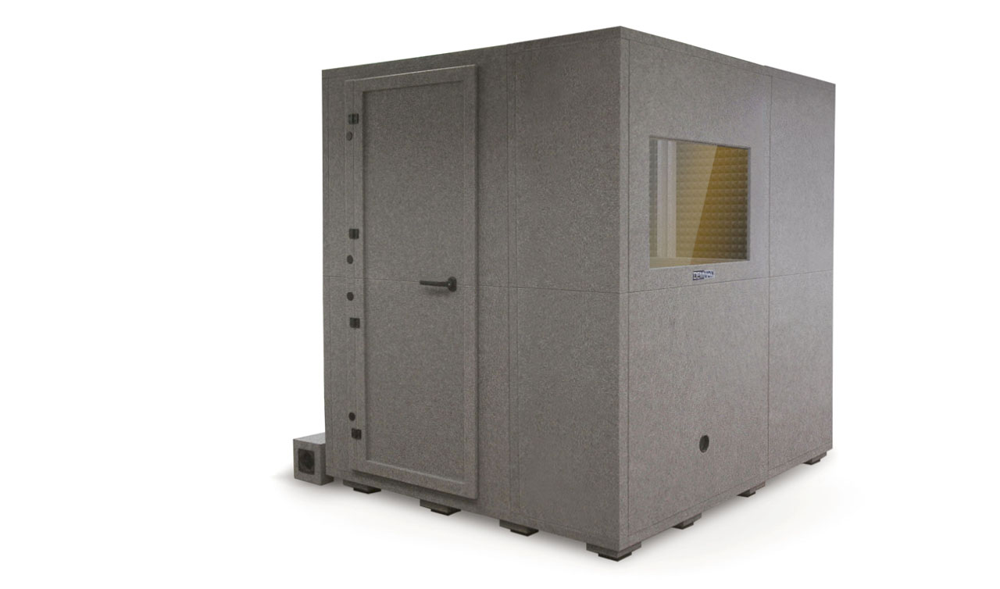
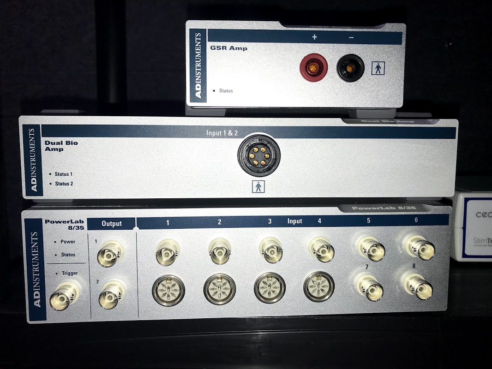
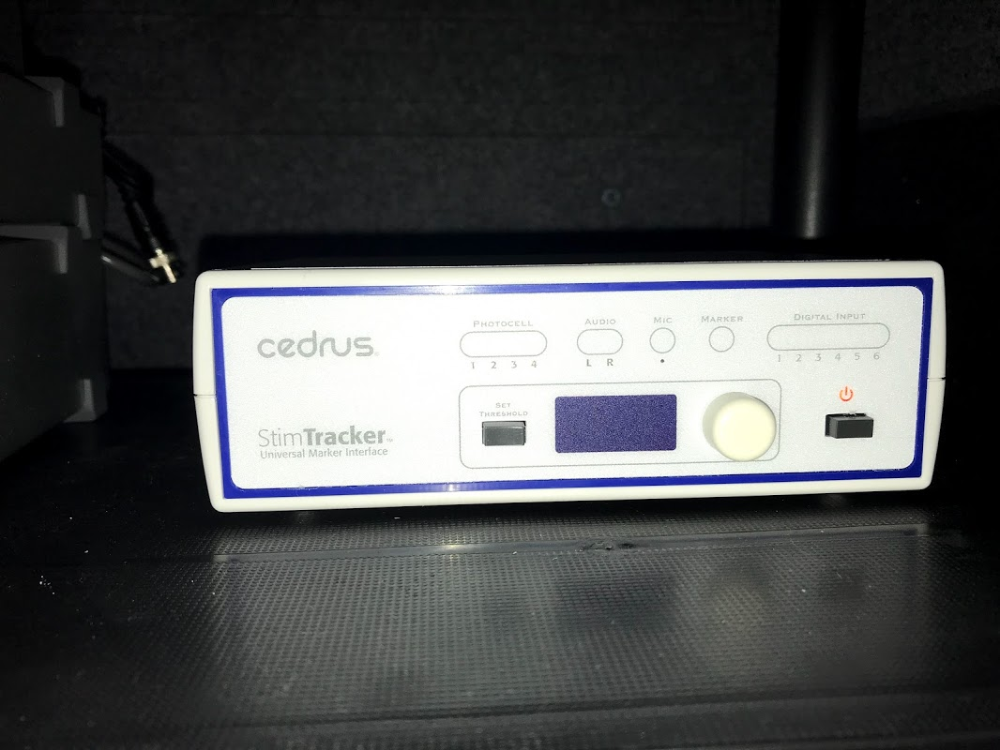
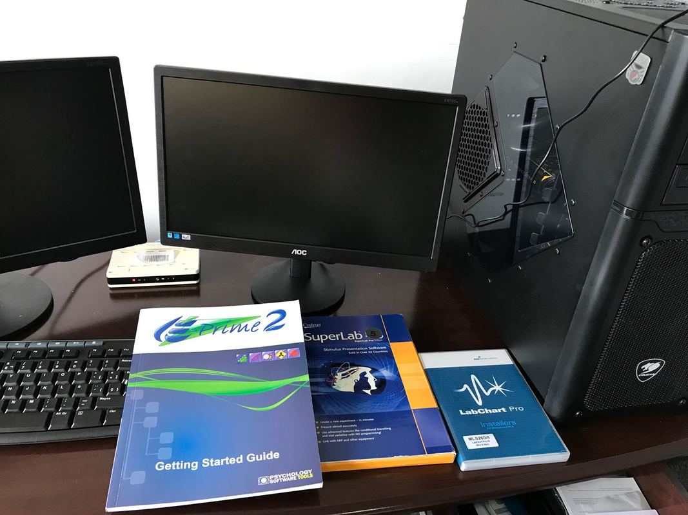
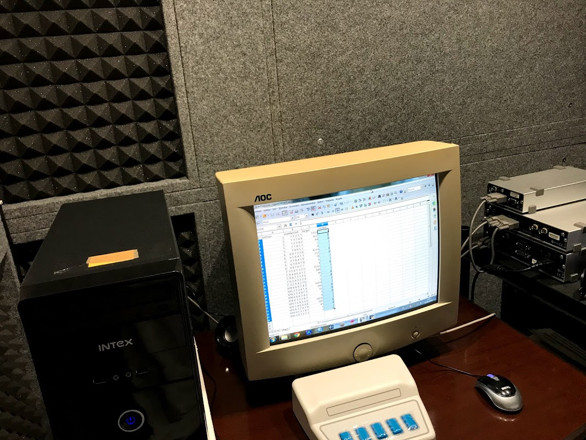
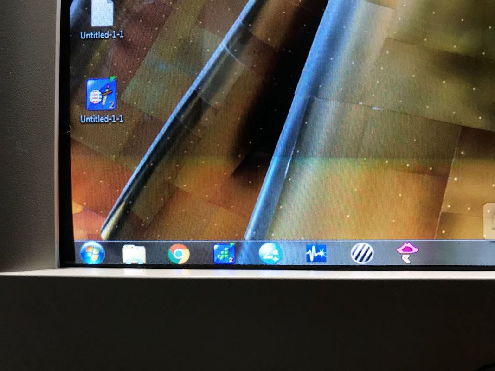

Este espacio garantiza condiciones de aislamiento de los sujetos experimentales que impiden que elementos y eventos contrarios al set experimental -donde se manipulan las variables de cada estudio- puedan afectar el levantamiento de datos.
Este equipo permite conducir un rango amplio de estudios con estímulos visualmente presentados y demandar respuestas psicofisiológicas. Permitirá adicionar medidas de este corte a las medidas de precisión y tiempo de reacción a registrar con los otros equipos.
 Este equipo, con sus componentes periféricos, es una herramienta de uso muy extendido en la investigación experimental de Psicología. Nos permite obtener medidas clásicas como el tiempo de reacción y la precisión en diversas de tareas. Tiene además una interfaz y un ambiente amigable para estudiantes y profesores que no cuentan con fuerte formación informática.
Torre Intel Core i5-6600K/Z170A/16GB/1060/1TB+SSD120 (tarjeta de video: EVGA GTX1060) y doble monitor (LED AOC E2070SWN 20"). Esta estación, externa a la cabina insonorizada, nos permite programar tareas experimentales, almacenar y analizar datos.
Torre: Intel Core i5-6400/MSI H110/SSD120/4GB (DDR4Kingston, SSD KINGSTON 120GB ) con monitor CTR 20". Esta estación, interna a la cabina insonorizada, nos permite correr las tareas experimentales y levantar datos a través de ellas.
El Labpex hace uso de software diverso para programar experimentos y analizar datos: Psychopy, Praat, SPSS, entre otros.
